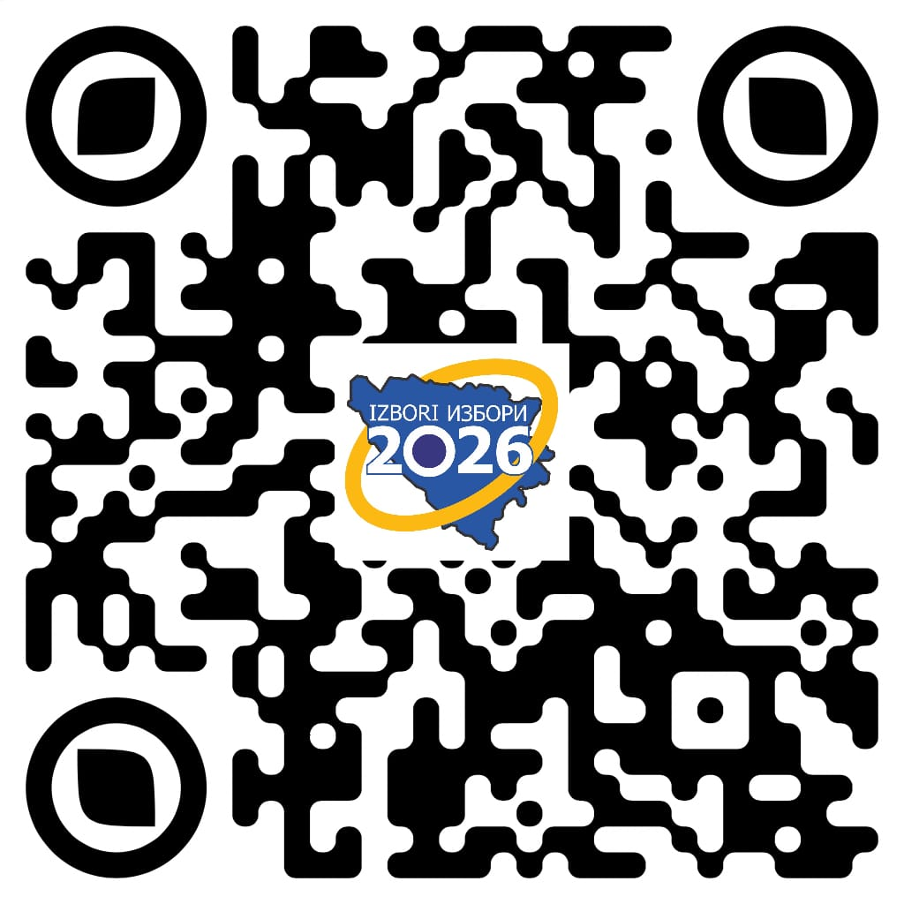

Izbori 2026
Elektronska prijava birača za glasanje izvan BiH
Ovaj servis omogućava elektronsko podnošenje zahtjeva za registraciju birača za glasanje izvan Bosne i Hercegovine. Putem servisa možete popuniti sve potrebne podatke i direktno poslati zahtjev Centralnoj izbornoj komisiji Bosne i Hercegovine za upis u izvod iz Centralnog biračkog spiska.
Za više informacija kliknite na link eRegistracija ili skenirajte QR kod.
